Chapter 3. Modeling with Linear Regressions#
import os
import warnings
import arviz as az
import matplotlib.pyplot as plt
import pandas as pd
import jax.numpy as jnp
from jax import random, local_device_count
import numpyro
import numpyro.distributions as dist
from numpyro.infer import MCMC, NUTS, Predictive
seed=1234
if "SVG" in os.environ:
%config InlineBackend.figure_formats = ["svg"]
warnings.formatwarning = lambda message, category, *args, **kwargs: "{}: {}\n".format(
category.__name__, message
)
az.style.use("arviz-darkgrid")
numpyro.set_platform("cpu") # or "gpu", "tpu" depending on system
numpyro.set_host_device_count(local_device_count())
/home/runner/work/bap-numpyro/bap-numpyro/.venv/lib/python3.13/site-packages/tqdm/auto.py:21: TqdmWarning: IProgress not found. Please update jupyter and ipywidgets. See https://ipywidgets.readthedocs.io/en/stable/user_install.html
from .autonotebook import tqdm as notebook_tqdm
# import pymc3 as pm
# import numpy as np
# import pandas as pd
# import scipy.stats as stats
# import matplotlib.pyplot as plt
# import arviz as az
# az.style.use('arviz-darkgrid')
Simple linear regression#
N = 100
alpha_real = 2.5
beta_real = 0.9
eps_real = dist.Normal(loc=0, scale=1).sample(random.PRNGKey(0), (N,))
x = dist.Normal(loc=10, scale=1.).sample(random.PRNGKey(1), (N,)) # Same seed produces perfect line
y_real = alpha_real + beta_real * x
y = y_real + eps_real
# we can center the data
# x = x - x.mean()
# or standardize the data
# x = (x - x.mean())/x.std()
# y = (y - y.mean())/y.std()
_, ax = plt.subplots(1, 2, figsize=(8, 4))
ax[0].plot(x, y, 'C0.')
ax[0].set_xlabel('x')
ax[0].set_ylabel('y', rotation=0)
ax[0].plot(x, y_real, 'k')
az.plot_kde(y, ax=ax[1])
ax[1].set_xlabel('y')
plt.tight_layout()
UserWarning: The figure layout has changed to tight
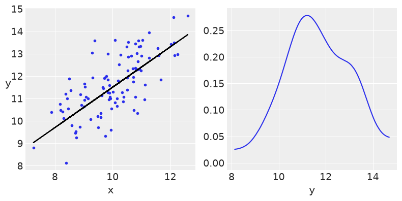
def model(obs=None):
α = numpyro.sample('α', dist.Normal(loc=0, scale=10))
β = numpyro.sample('β', dist.Normal(loc=0, scale=1))
ϵ = numpyro.sample('ϵ', dist.HalfCauchy(scale=5))
μ = numpyro.deterministic('μ', α + β * x)
y_pred = numpyro.sample('y_pred', dist.Normal(loc=μ, scale=ϵ), obs=obs, sample_shape=(len(y),))
kernel = NUTS(model)
mcmc = MCMC(kernel, num_warmup=1000, num_samples=2000, num_chains=2)
mcmc.run(random.PRNGKey(seed), obs=y)
UserWarning: There are not enough devices to run parallel chains: expected 2 but got 1. Chains will be drawn sequentially. If you are running MCMC in CPU, consider using `numpyro.set_host_device_count(2)` at the beginning of your program. You can double-check how many devices are available in your system using `jax.local_device_count()`.
az.plot_trace(mcmc, var_names=['α', 'β', 'ϵ'], compact=False)
array([[<Axes: title={'center': 'α'}>, <Axes: title={'center': 'α'}>],
[<Axes: title={'center': 'β'}>, <Axes: title={'center': 'β'}>],
[<Axes: title={'center': 'ϵ'}>, <Axes: title={'center': 'ϵ'}>]],
dtype=object)
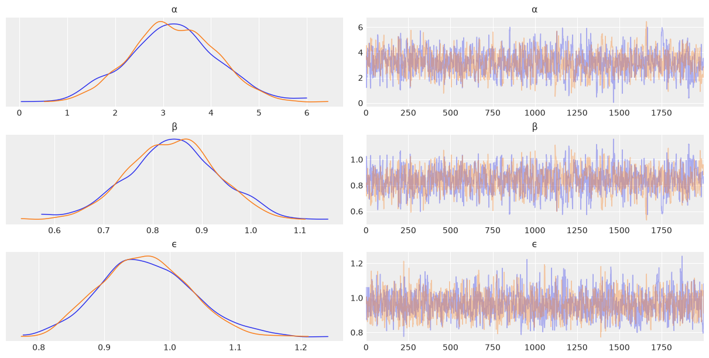
Modyfing the data before running the models#
az.plot_pair(mcmc, var_names=['α', 'β'], scatter_kwargs={'alpha': 0.1}) # UserWarning: plot_kwargs will be deprecated. Please use scatter_kwargs, kde_kwargs and/or hexbin_kwargs
<Axes: xlabel='α', ylabel='β'>
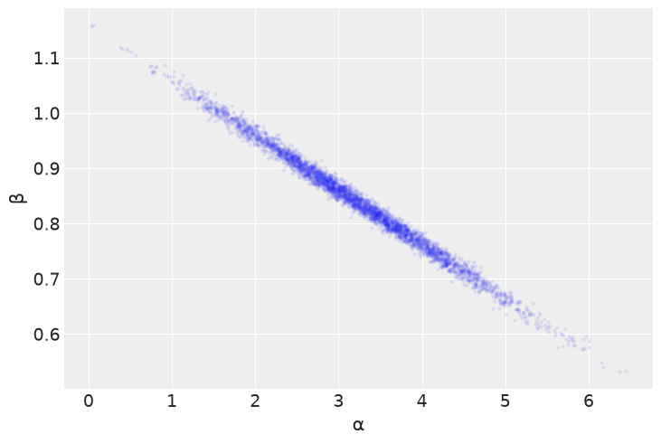
interpreting the posterior#
plt.plot(x, y, 'C0.')
alpha_m = mcmc.get_samples()['α'].mean()
beta_m = mcmc.get_samples()['β'].mean()
draws = range(0, len(mcmc.get_samples()['α']), 10)
plt.plot(x, mcmc.get_samples()['α'][jnp.array(draws)] + mcmc.get_samples()['β'][jnp.array(draws)] # https://github.com/google/jax/issues/4564
* x[:, jnp.newaxis], c='gray', alpha=0.5)
plt.plot(x, alpha_m + beta_m * x, c='k',
label=f'y = {alpha_m:.2f} + {beta_m:.2f} * x')
plt.xlabel('x')
plt.ylabel('y', rotation=0)
plt.legend()
<matplotlib.legend.Legend at 0x7f8dccc48590>
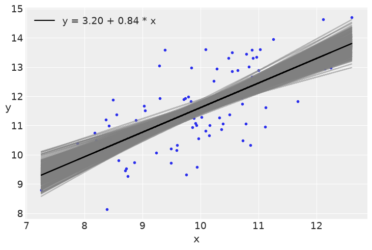
plt.plot(x, alpha_m + beta_m * x, c='k',
label=f'y = {alpha_m:.2f} + {beta_m:.2f} * x')
sig = az.plot_hdi(x, mcmc.get_samples()['μ'], hdi_prob=0.98, color='k')
plt.xlabel('x')
plt.ylabel('y', rotation=0)
plt.legend()
FutureWarning: hdi currently interprets 2d data as (draw, shape) but this will change in a future release to (chain, draw) for coherence with other functions
<matplotlib.legend.Legend at 0x7f8dc4951310>
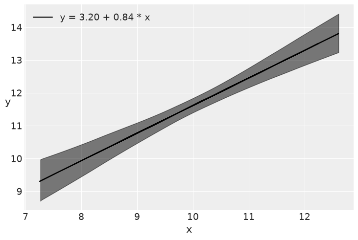
pred = Predictive(model=mcmc.sampler.model, posterior_samples=mcmc.get_samples(), return_sites=['y_pred'])
ppc = pred(random.PRNGKey(seed))
ppc['y_pred'].shape
(4000, 100, 100)
ppc['y_pred'] = ppc['y_pred'][:100]
ppc['y_pred'].shape
(100, 100, 100)
samples = az.from_numpyro(mcmc, posterior_predictive=ppc)
az.plot_ppc(samples, mean=True, observed=True, alpha=0.1)
posterior predictive shape not compatible with number of chains and draws. This can mean that some draws or even whole chains are not represented.
<Axes: xlabel='y_pred'>
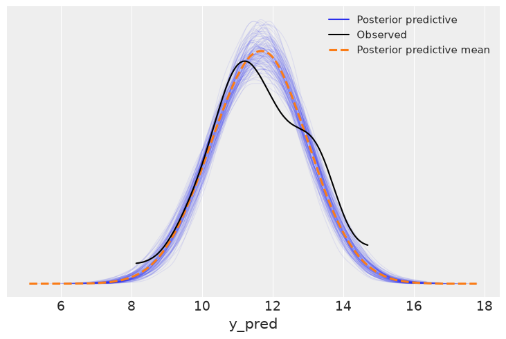
plt.plot(x, y, 'b.')
plt.plot(x, alpha_m + beta_m * x, c='k',
label=f'y = {alpha_m:.2f} + {beta_m:.2f} * x')
az.plot_hdi(x, ppc['y_pred'], hdi_prob=0.5, color='gray')
az.plot_hdi(x, ppc['y_pred'], color='gray')
plt.xlabel('x')
plt.ylabel('y', rotation=0)
Text(0, 0.5, 'y')
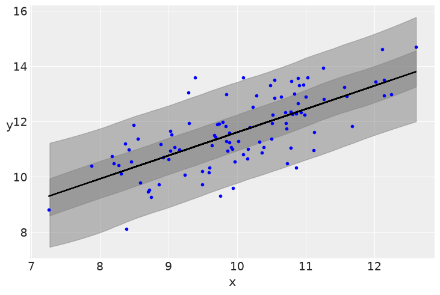
az.r2_score(y, ppc['y_pred'])
r2 0.5
r2_std 2.6889888e-08
dtype: object
The multivariate normal distribution#
Actually the bivariate
sigma_x1 = 1
sigmas_x2 = [1, 2]
rhos = [-0.90, -0.5, 0, 0.5, 0.90]
k, l = jnp.mgrid[-5:5:.1, -5:5:.1]
pos = jnp.empty(k.shape + (2,))
# pos[:, :, 0] = k
# pos[:, :, 1] = l
pos = pos.at[:, :, 0].set(k)
pos = pos.at[:, :, 1].set(l)
f, ax = plt.subplots(len(sigmas_x2), len(rhos),
sharex=True, sharey=True, figsize=(12, 6),
constrained_layout=True)
for i in range(2):
for j in range(5):
sigma_x2 = sigmas_x2[i]
rho = rhos[j]
cov = jnp.array([[sigma_x1**2, sigma_x1*sigma_x2*rho],
[sigma_x1*sigma_x2*rho, sigma_x2**2]])
rv = dist.MultivariateNormal(jnp.array([0,0]), covariance_matrix=cov)
ax[i, j].contour(k, l, jnp.exp(rv.log_prob(pos)), levels=6)
ax[i, j].set_xlim(-8, 8)
ax[i, j].set_ylim(-8, 8)
ax[i, j].set_yticks([-5, 0, 5])
ax[i, j].plot(0, 0, label=f'$\\sigma_{{x2}}$ = {sigma_x2:3.2f}\n$\\rho$ = {rho:3.2f}', alpha=0)
ax[i, j].legend()
f.text(0.5, -0.05, 'x_1', ha='center', fontsize=18)
f.text(-0.05, 0.5, 'x_2', va='center', fontsize=18, rotation=0)
Text(-0.05, 0.5, 'x_2')
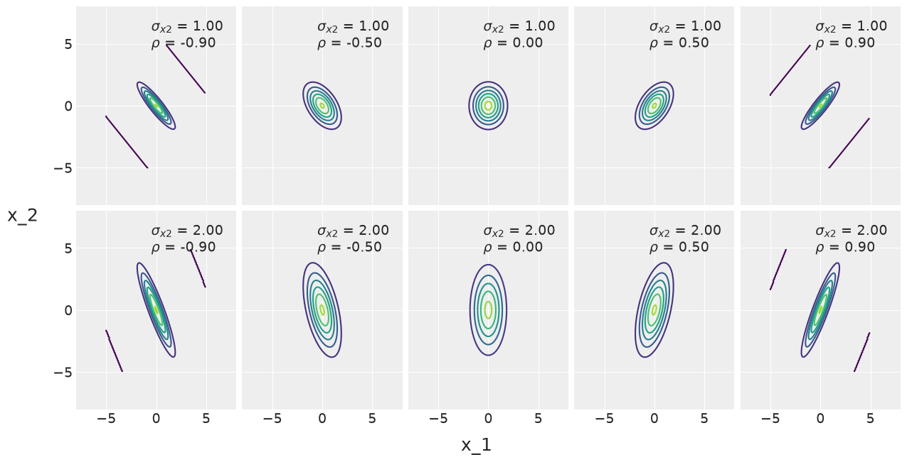
data = jnp.stack((x, y)).T
def model(obs=None):
μ = numpyro.sample('μ', dist.Normal(loc=data.mean(0), scale=10))
σ_1 = numpyro.sample('σ_1', dist.HalfNormal(scale=10))
σ_2 = numpyro.sample('σ_2', dist.HalfNormal(scale=10))
ρ = numpyro.sample('ρ', dist.Uniform(low=-1., high=1.))
r2 = numpyro.deterministic('r2', ρ**2)
cov = jnp.stack((jnp.array([σ_1**2, σ_1*σ_2*ρ]),
jnp.array([σ_1*σ_2*ρ, σ_2**2])))
y_pred = numpyro.sample('y_pred', dist.MultivariateNormal(loc=μ, covariance_matrix=cov), obs=obs)
kernel = NUTS(model)
mcmc2 = MCMC(kernel, num_warmup=1000, num_samples=1000, num_chains=2)
mcmc2.run(random.PRNGKey(seed), obs=data)
UserWarning: There are not enough devices to run parallel chains: expected 2 but got 1. Chains will be drawn sequentially. If you are running MCMC in CPU, consider using `numpyro.set_host_device_count(2)` at the beginning of your program. You can double-check how many devices are available in your system using `jax.local_device_count()`.
az.plot_trace(mcmc2, var_names=['r2'], compact=False)
array([[<Axes: title={'center': 'r2'}>, <Axes: title={'center': 'r2'}>]],
dtype=object)
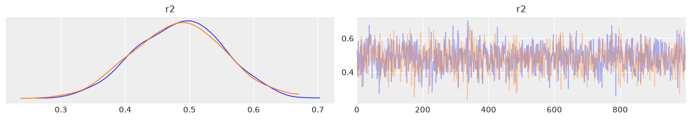
az.summary(mcmc2, var_names=['r2'])
| mean | sd | hdi_3% | hdi_97% | mcse_mean | mcse_sd | ess_bulk | ess_tail | r_hat | |
|---|---|---|---|---|---|---|---|---|---|
| r2 | 0.483 | 0.071 | 0.346 | 0.614 | 0.002 | 0.001 | 1327.0 | 1063.0 | 1.0 |
Robust linear regression#
ans = pd.read_csv('../data/anscombe.csv')
x_3 = ans[ans.group == 'III']['x'].values
y_3 = ans[ans.group == 'III']['y'].values
x_3 = x_3 - x_3.mean()
_, ax = plt.subplots(1, 2, figsize=(10, 5))
beta_c, alpha_c = jnp.polyfit(x_3, y_3, deg=1) # equivulant to stats.linregress(x_3, y_3)[:2]
ax[0].plot(x_3, (alpha_c + beta_c * x_3), 'k',
label=f'y ={alpha_c:.2f} + {beta_c:.2f} * x')
ax[0].plot(x_3, y_3, 'C0o')
ax[0].set_xlabel('x')
ax[0].set_ylabel('y', rotation=0)
ax[0].legend(loc=0)
az.plot_kde(y_3, ax=ax[1], rug=True)
ax[1].set_xlabel('y')
ax[1].set_yticks([])
plt.tight_layout()
UserWarning: The figure layout has changed to tight
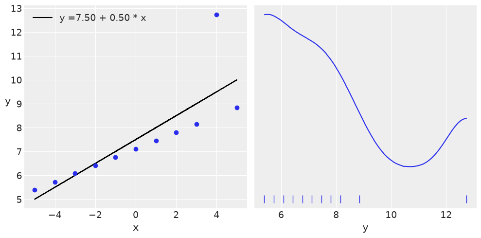
def model(obs=None):
α = numpyro.sample('α', dist.Normal(loc=y_3.mean(), scale=1))
β = numpyro.sample('β', dist.Normal(loc=0, scale=1))
ϵ = numpyro.sample('ϵ', dist.HalfNormal(scale=5))
ν_ = numpyro.sample('ν_', dist.Exponential(rate=1/29))
ν = numpyro.deterministic('ν', ν_ + 1)
y_pred = numpyro.sample('y_pred', dist.StudentT(df=ν, loc=α + β * x_3, scale=ϵ), obs=obs)
kernel = NUTS(model)
mcmc3 = MCMC(kernel, num_warmup=1000, num_samples=1000, num_chains=4)
mcmc3.run(random.PRNGKey(seed), obs=y_3)
UserWarning: There are not enough devices to run parallel chains: expected 4 but got 1. Chains will be drawn sequentially. If you are running MCMC in CPU, consider using `numpyro.set_host_device_count(4)` at the beginning of your program. You can double-check how many devices are available in your system using `jax.local_device_count()`.
varnames = ['α', 'β', 'ϵ', 'ν']
az.plot_trace(mcmc3, var_names=varnames, compact=False);
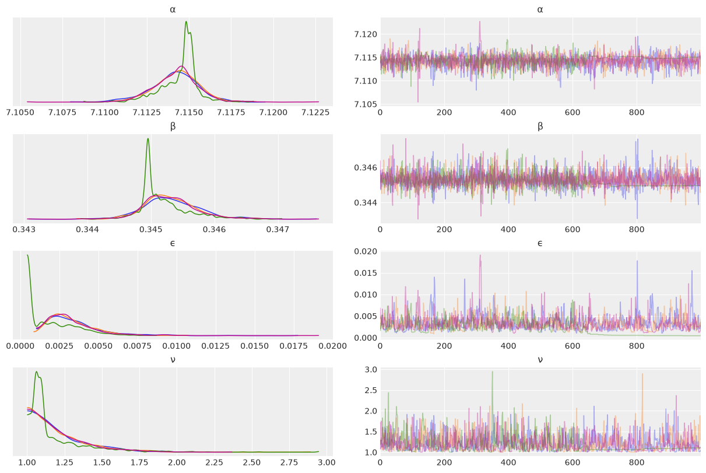
beta_c, alpha_c = jnp.polyfit(x_3, y_3, deg=1)
plt.plot(x_3, (alpha_c + beta_c * x_3), 'k', label='non-robust', alpha=0.5)
plt.plot(x_3, y_3, 'C0o')
alpha_m = jnp.mean(mcmc3.get_samples()['α'])
beta_m = jnp.mean(mcmc3.get_samples()['β'])
plt.plot(x_3, alpha_m + beta_m * x_3, c='k', label='robust')
plt.xlabel('x')
plt.ylabel('y', rotation=0)
plt.legend(loc=2)
plt.tight_layout()
UserWarning: The figure layout has changed to tight
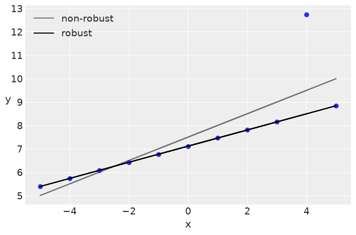
az.summary(mcmc3, var_names=varnames)
| mean | sd | hdi_3% | hdi_97% | mcse_mean | mcse_sd | ess_bulk | ess_tail | r_hat | |
|---|---|---|---|---|---|---|---|---|---|
| α | 7.114 | 0.001 | 7.112 | 7.117 | 0.000 | 0.000 | 764.0 | 1744.0 | 1.02 |
| β | 0.345 | 0.000 | 0.345 | 0.346 | 0.000 | 0.000 | 132.0 | 2254.0 | 1.03 |
| ϵ | 0.003 | 0.002 | 0.000 | 0.006 | 0.000 | 0.000 | 15.0 | 9.0 | 1.18 |
| ν | 1.203 | 0.200 | 1.000 | 1.582 | 0.012 | 0.006 | 653.0 | 900.0 | 1.01 |
pred = Predictive(model=mcmc3.sampler.model, posterior_samples=mcmc3.get_samples(), return_sites=['y_pred'])
ppc = pred(random.PRNGKey(seed))
ppc['y_pred'] = ppc['y_pred'][:200]
ppc['y_pred'].shape
(200, 11)
data_ppc = az.from_numpyro(mcmc3, posterior_predictive=ppc)
az.plot_ppc(data_ppc, figsize=(12, 6), mean=True, alpha=0.1, color='C0')
plt.xlim(0, 12)
posterior predictive shape not compatible with number of chains and draws. This can mean that some draws or even whole chains are not represented.
FutureWarning: color has been deprecated in favor of colors
(0.0, 12.0)
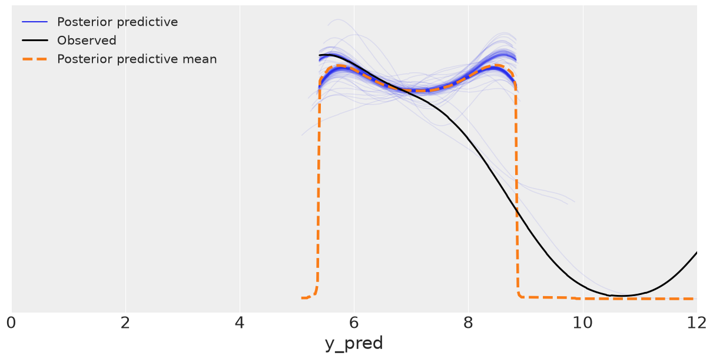
Hierarchical linear regression#
N = 20
M = 8
idx = jnp.repeat(jnp.arange(M-1), N)
idx = jnp.append(idx, 7)
# alpha_real = numpyro.sample('alpha_real', dist.Normal(loc=2.5, scale=0.5), sample_shape=(M,))
alpha_real = dist.Normal(loc=2.5, scale=0.5).sample(random.PRNGKey(seed), (M,))
beta_real = dist.Beta(concentration1=6, concentration0=1).sample(random.PRNGKey(seed), (M,))
eps_real = dist.Normal(loc=0, scale=0.5).sample(random.PRNGKey(seed+1), (len(idx),))
y_m = jnp.zeros(len(idx))
x_m = dist.Normal(loc=10, scale=1.).sample(random.PRNGKey(seed), (len(idx),))
y_m = alpha_real[idx] + beta_real[idx] * x_m + eps_real
_, ax = plt.subplots(2, 4, figsize=(10, 5), sharex=True, sharey=True)
ax = list(ax.flat) # np.ravel(ax)
j, k = 0, N
for i in range(M):
ax[i].scatter(x_m[j:k], y_m[j:k])
ax[i].set_xlabel(f'x_{i}')
ax[i].set_ylabel(f'y_{i}', rotation=0, labelpad=15)
ax[i].set_xlim(6, 15)
ax[i].set_ylim(7, 17)
j += N
k += N
plt.tight_layout()
UserWarning: The figure layout has changed to tight
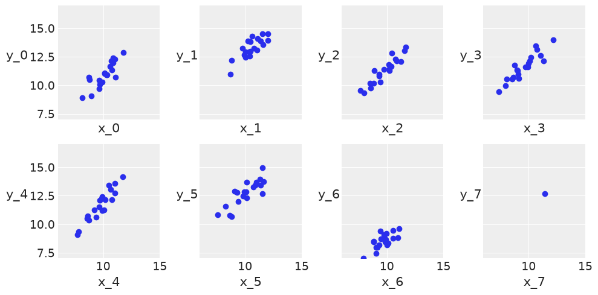
x_centered = x_m - x_m.mean()
def model(obs=None):
with numpyro.handlers.seed(rng_seed=seed):
α_tmp = numpyro.sample("α_tmp", dist.Normal(loc=0, scale=10).expand([M]))
β = numpyro.sample("β", dist.Normal(loc=0, scale=10).expand([M]))
ϵ = numpyro.sample('ϵ', dist.HalfCauchy(scale=5))
ν = numpyro.sample('ν', dist.Exponential(rate=1/30))
y_pred = numpyro.sample('y_pred', dist.StudentT(df=ν, loc=α_tmp[idx] + β[idx] * x_centered, scale=ϵ), obs=obs)
α = numpyro.deterministic('α', α_tmp - β * x_m.mean())
kernel = NUTS(model)
mcmc4 = MCMC(kernel, num_warmup=1000, num_samples=1000, num_chains=4, chain_method='sequential')
mcmc4.run(random.PRNGKey(seed), obs=y_m)
az.plot_forest(mcmc4, var_names=['α', 'β'], combined=True)
array([<Axes: title={'center': '94.0% HDI'}>], dtype=object)
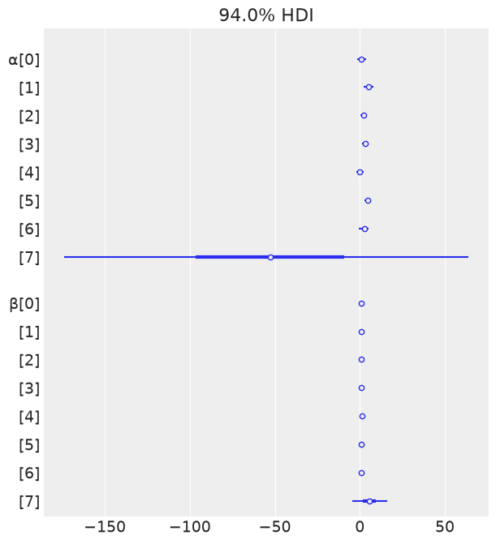
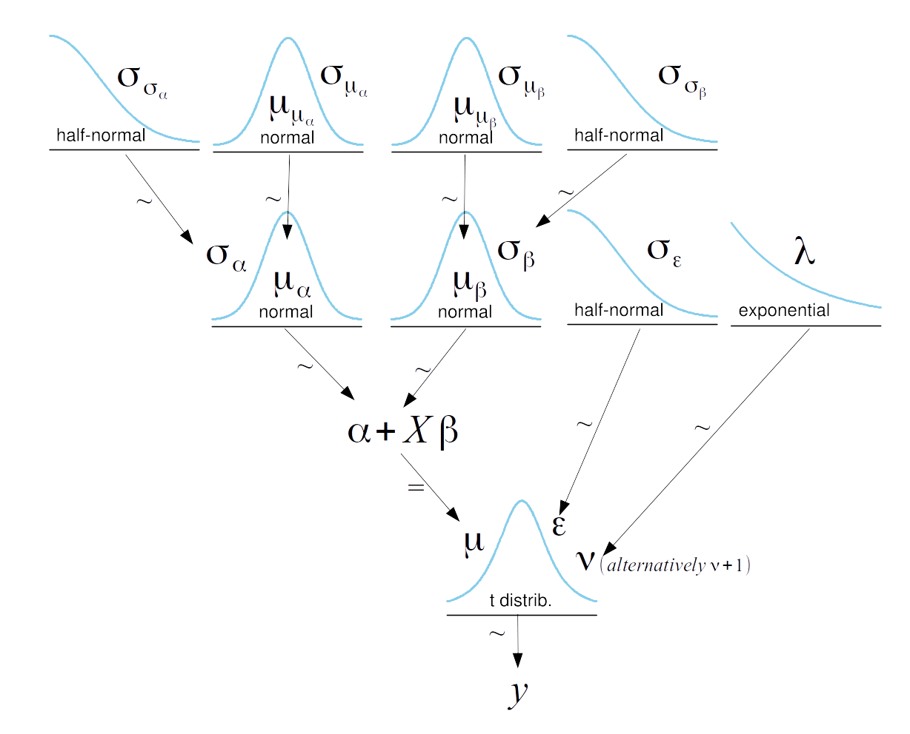
def model(obs=None):
# Hyper-priors
α_μ_tmp = numpyro.sample('α_μ_tmp', dist.Normal(loc=0, scale=10))
α_σ_tmp = numpyro.sample('α_σ_tmp', dist.HalfNormal(scale=10))
β_μ = numpyro.sample('β_μ', dist.Normal(loc=0, scale=10))
β_σ = numpyro.sample('β_σ', dist.HalfNormal(scale=10))
# Priors
with numpyro.handlers.seed(rng_seed=seed):
α_tmp = numpyro.sample("α_tmp", dist.Normal(loc=α_μ_tmp, scale=α_σ_tmp).expand([M]))
β = numpyro.sample("β", dist.Normal(loc=β_μ, scale=β_σ).expand([M]))
ϵ = numpyro.sample('ϵ', dist.HalfCauchy(scale=5))
ν = numpyro.sample('ν', dist.Exponential(rate=1/30))
y_pred = numpyro.sample('y_pred', dist.StudentT(df=ν, loc=α_tmp[idx] + β[idx] * x_centered,
scale=ϵ), obs=obs)
α = numpyro.deterministic('α', α_tmp - β * x_m.mean())
α_μ = numpyro.deterministic('α_μ', α_μ_tmp - β_μ * x_m.mean())
α_σ = numpyro.deterministic('α_sd', α_σ_tmp - β_μ * x_m.mean())
kernel = NUTS(model)
mcmc5 = MCMC(kernel, num_warmup=1000, num_samples=1000, num_chains=4, chain_method='sequential')
mcmc5.run(random.PRNGKey(seed), obs=y_m)
az.plot_forest(mcmc5, var_names=['α', 'β'], combined=True)
array([<Axes: title={'center': '94.0% HDI'}>], dtype=object)
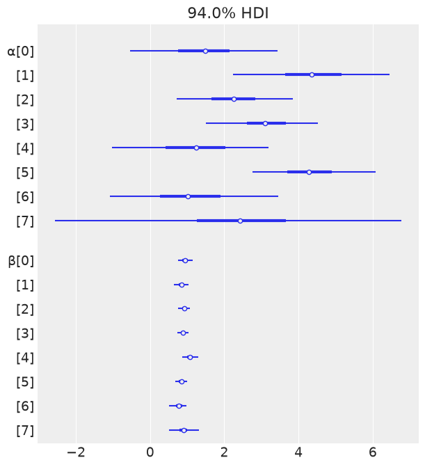
_, ax = plt.subplots(2, 4, figsize=(10, 5), sharex=True, sharey=True, constrained_layout=True)
ax = list(ax.flat) # np.ravel(ax)
j, k = 0, N
x_range = jnp.linspace(x_m.min(), x_m.max(), 10)
for i in range(M):
ax[i].scatter(x_m[j:k], y_m[j:k])
ax[i].set_xlabel(f'x_{i}')
ax[i].set_ylabel(f'y_{i}', labelpad=17, rotation=0)
alpha_m = mcmc5.get_samples()['α'][:, i].mean()
beta_m = mcmc5.get_samples()['β'][:, i].mean()
ax[i].plot(x_range, alpha_m + beta_m * x_range, c='k', label=f'y = {alpha_m:.2f} + {beta_m:.2f} * x')
plt.xlim(x_m.min()-1, x_m.max()+1)
plt.ylim(y_m.min()-1, y_m.max()+1)
j += N
k += N
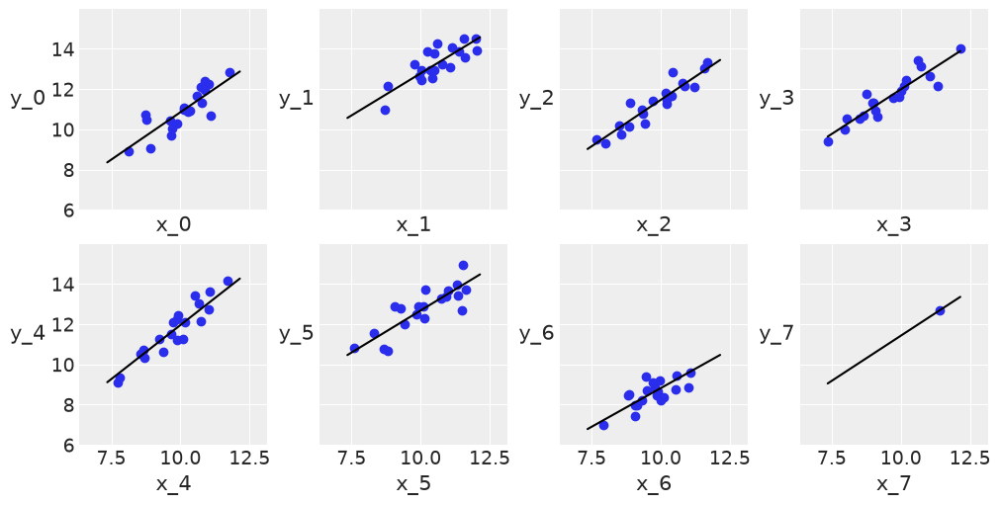
Polynomial regression#
x_2 = ans[ans.group == 'II']['x'].values
y_2 = ans[ans.group == 'II']['y'].values
x_2 = x_2 - x_2.mean()
plt.scatter(x_2, y_2)
plt.xlabel('x')
plt.ylabel('y', rotation=0)
Text(0, 0.5, 'y')
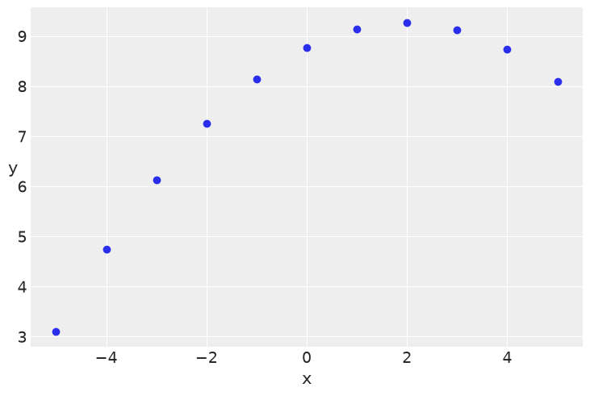
def model(obs=None):
α = numpyro.sample("α", dist.Normal(loc=y_2.mean(), scale=1))
β1 = numpyro.sample("β1", dist.Normal(loc=0, scale=1))
β2 = numpyro.sample("β2", dist.Normal(loc=0, scale=1))
ϵ = numpyro.sample('ϵ', dist.HalfCauchy(scale=5))
mu = numpyro.deterministic('mu', α + β1 * x_2 + β2 * x_2**2)
y_pred = numpyro.sample('y_pred', dist.Normal(loc=mu, scale=ϵ), obs=obs)
kernel = NUTS(model)
mcmc6 = MCMC(kernel, num_warmup=1000, num_samples=1000, num_chains=4, chain_method='sequential')
mcmc6.run(random.PRNGKey(seed), obs=y_2)
az.plot_trace(mcmc6, compact=False)
array([[<Axes: title={'center': 'mu\n0'}>,
<Axes: title={'center': 'mu\n0'}>],
[<Axes: title={'center': 'mu\n1'}>,
<Axes: title={'center': 'mu\n1'}>],
[<Axes: title={'center': 'mu\n2'}>,
<Axes: title={'center': 'mu\n2'}>],
[<Axes: title={'center': 'mu\n3'}>,
<Axes: title={'center': 'mu\n3'}>],
[<Axes: title={'center': 'mu\n4'}>,
<Axes: title={'center': 'mu\n4'}>],
[<Axes: title={'center': 'mu\n5'}>,
<Axes: title={'center': 'mu\n5'}>],
[<Axes: title={'center': 'mu\n6'}>,
<Axes: title={'center': 'mu\n6'}>],
[<Axes: title={'center': 'mu\n7'}>,
<Axes: title={'center': 'mu\n7'}>],
[<Axes: title={'center': 'mu\n8'}>,
<Axes: title={'center': 'mu\n8'}>],
[<Axes: title={'center': 'mu\n9'}>,
<Axes: title={'center': 'mu\n9'}>],
[<Axes: title={'center': 'mu\n10'}>,
<Axes: title={'center': 'mu\n10'}>],
[<Axes: title={'center': 'α'}>, <Axes: title={'center': 'α'}>],
[<Axes: title={'center': 'β1'}>, <Axes: title={'center': 'β1'}>],
[<Axes: title={'center': 'β2'}>, <Axes: title={'center': 'β2'}>],
[<Axes: title={'center': 'ϵ'}>, <Axes: title={'center': 'ϵ'}>]],
dtype=object)
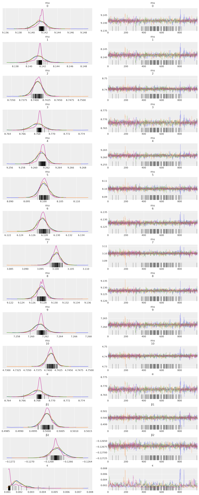
az.summary(mcmc6)
| mean | sd | hdi_3% | hdi_97% | mcse_mean | mcse_sd | ess_bulk | ess_tail | r_hat | |
|---|---|---|---|---|---|---|---|---|---|
| mu[0] | 9.141 | 0.001 | 9.140 | 9.143 | 0.0 | 0.0 | 1400.0 | 1321.0 | 1.03 |
| mu[1] | 8.141 | 0.001 | 8.140 | 8.143 | 0.0 | 0.0 | 1457.0 | 1368.0 | 1.03 |
| mu[2] | 8.741 | 0.001 | 8.739 | 8.743 | 0.0 | 0.0 | 3577.0 | 2165.0 | 1.01 |
| mu[3] | 8.768 | 0.001 | 8.766 | 8.770 | 0.0 | 0.0 | 1402.0 | 1285.0 | 1.04 |
| mu[4] | 9.261 | 0.001 | 9.260 | 9.263 | 0.0 | 0.0 | 1536.0 | 1565.0 | 1.02 |
| mu[5] | 8.100 | 0.002 | 8.097 | 8.103 | 0.0 | 0.0 | 3282.0 | 1966.0 | 1.01 |
| mu[6] | 6.128 | 0.001 | 6.126 | 6.129 | 0.0 | 0.0 | 2209.0 | 1848.0 | 1.02 |
| mu[7] | 3.100 | 0.002 | 3.097 | 3.103 | 0.0 | 0.0 | 2998.0 | 1900.0 | 1.02 |
| mu[8] | 9.128 | 0.001 | 9.126 | 9.129 | 0.0 | 0.0 | 2101.0 | 2255.0 | 1.01 |
| mu[9] | 7.261 | 0.001 | 7.259 | 7.263 | 0.0 | 0.0 | 1654.0 | 1628.0 | 1.03 |
| mu[10] | 4.741 | 0.001 | 4.739 | 4.743 | 0.0 | 0.0 | 2877.0 | 1872.0 | 1.02 |
| α | 8.768 | 0.001 | 8.766 | 8.770 | 0.0 | 0.0 | 1402.0 | 1285.0 | 1.04 |
| β1 | 0.500 | 0.000 | 0.500 | 0.500 | 0.0 | 0.0 | 2255.0 | 1669.0 | 1.01 |
| β2 | -0.127 | 0.000 | -0.127 | -0.127 | 0.0 | 0.0 | 1963.0 | 1607.0 | 1.02 |
| ϵ | 0.002 | 0.001 | 0.001 | 0.003 | 0.0 | 0.0 | 23.0 | 20.0 | 1.12 |
x_p = jnp.linspace(-6, 6)
y_p = mcmc6.get_samples()['α'].mean() + mcmc6.get_samples()['β1'].mean() * \
x_p + mcmc6.get_samples()['β2'].mean() * x_p**2
plt.scatter(x_2, y_2)
plt.xlabel('x')
plt.ylabel('y', rotation=0)
plt.plot(x_p, y_p, c='C1')
[<matplotlib.lines.Line2D at 0x7f8db1ee9bd0>]
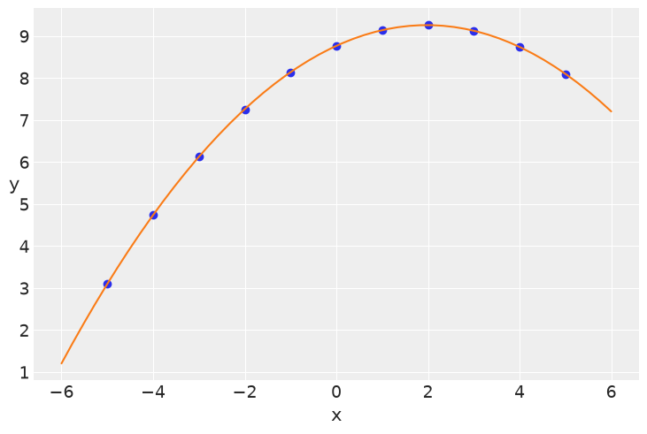
Multiple Linear regression#
N = 100
alpha_real = 2.5
beta_real = jnp.array([0.9, 1.5])
eps_real = dist.Normal(loc=0, scale=0.5).sample(random.PRNGKey(0), (N,))
X = jnp.array([dist.Normal(loc=i, scale=j).sample(random.PRNGKey(i), (N,)) for i, j in zip([10, 2], [1, 1.5])]).T
X_mean = X.mean(axis=0, keepdims=True)
X_centered = X - X_mean
y = alpha_real + jnp.dot(X, beta_real) + eps_real
def scatter_plot(x, y):
plt.figure(figsize=(10, 10))
for idx, x_i in enumerate(x.T):
plt.subplot(2, 2, idx+1)
plt.scatter(x_i, y)
plt.xlabel(f'x_{idx+1}')
plt.ylabel(f'y', rotation=0)
plt.subplot(2, 2, idx+2)
plt.scatter(x[:, 0], x[:, 1])
plt.xlabel(f'x_{idx}')
plt.ylabel(f'x_{idx+1}', rotation=0)
scatter_plot(X_centered, y)
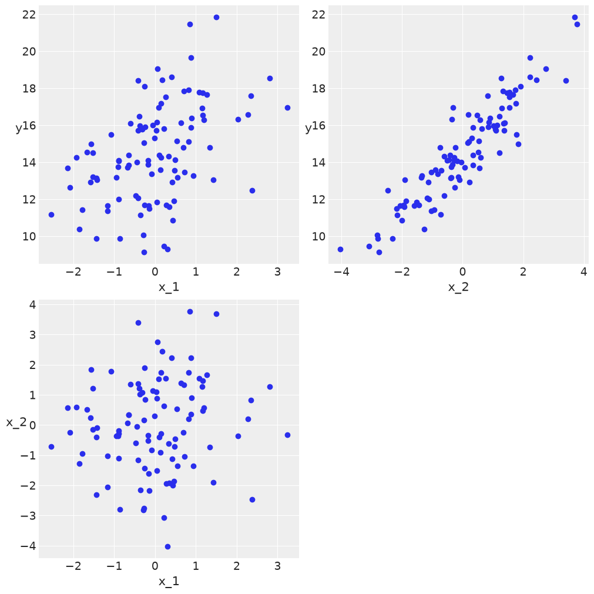
def model(obs=None):
α_tmp = numpyro.sample("α_tmp", dist.Normal(loc=0, scale=10))
β = numpyro.sample("β", dist.Normal(loc=0, scale=1), sample_shape=(2,))
ϵ = numpyro.sample('ϵ', dist.HalfCauchy(scale=5))
μ = numpyro.deterministic('μ', α_tmp + jnp.dot(X_centered, β))
α = numpyro.deterministic('α', α_tmp - jnp.dot(X_mean, β))
y_pred = numpyro.sample('y_pred', dist.Normal(loc=μ, scale=ϵ), obs=obs)
kernel = NUTS(model)
mcmc7 = MCMC(kernel, num_warmup=1000, num_samples=1000, num_chains=4, chain_method='sequential')
mcmc7.run(random.PRNGKey(seed), obs=y)
varnames = ['α', 'β', 'ϵ']
az.plot_trace(mcmc7, var_names=varnames);
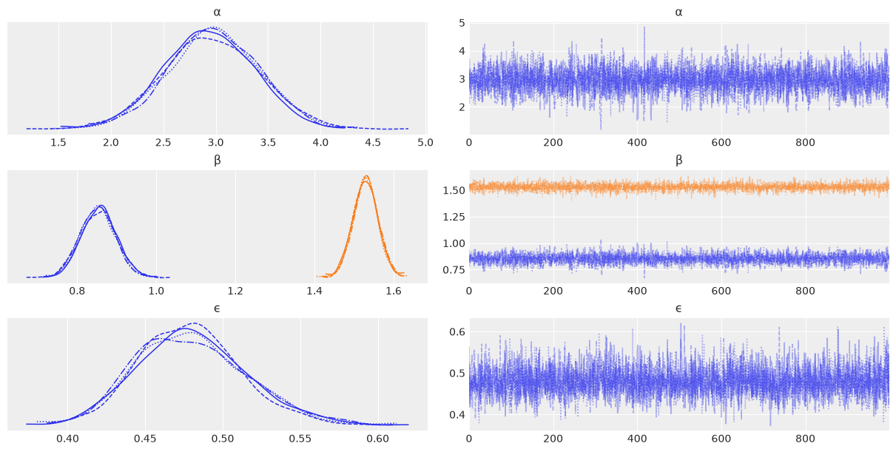
az.summary(mcmc7, var_names=varnames)
| mean | sd | hdi_3% | hdi_97% | mcse_mean | mcse_sd | ess_bulk | ess_tail | r_hat | |
|---|---|---|---|---|---|---|---|---|---|
| α[0] | 2.960 | 0.439 | 2.136 | 3.777 | 0.007 | 0.007 | 4527.0 | 2851.0 | 1.0 |
| β[0] | 0.853 | 0.044 | 0.776 | 0.941 | 0.001 | 0.001 | 4406.0 | 2845.0 | 1.0 |
| β[1] | 1.529 | 0.032 | 1.469 | 1.588 | 0.000 | 0.001 | 4347.0 | 3100.0 | 1.0 |
| ϵ | 0.480 | 0.035 | 0.416 | 0.547 | 0.000 | 0.001 | 5098.0 | 2892.0 | 1.0 |
Confounding variables and redundant variables#
N = 100
x_1 = dist.Normal().sample(random.PRNGKey(0), (N,))
x_2 = x_1 + numpyro.sample("x_2", dist.Normal(scale=1), rng_key=random.PRNGKey(1), sample_shape=(N,))
#x_2 = x_1 + np.random.normal(size=N, scale=0.01)
y = x_1 + dist.Normal().sample(random.PRNGKey(2), (N,))
X = jnp.vstack((x_1, x_2)).T
scatter_plot(X, y)
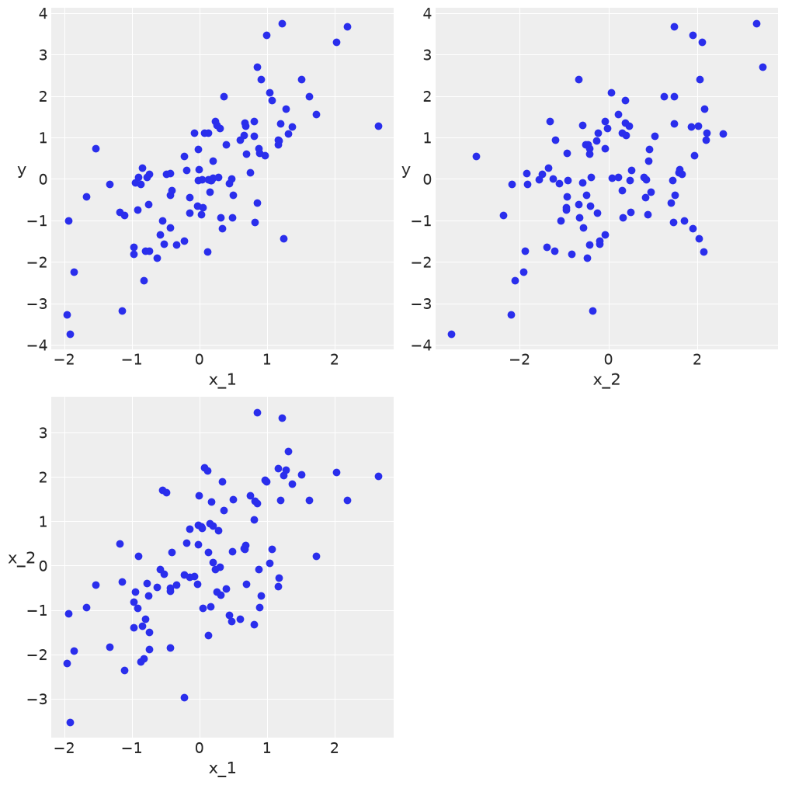
def model_x1x2(obs=None):
α = numpyro.sample("α", dist.Normal(loc=0, scale=10))
β1 = numpyro.sample("β1", dist.Normal(loc=0, scale=10))
β2 = numpyro.sample("β2", dist.Normal(loc=0, scale=10))
ϵ = numpyro.sample('ϵ', dist.HalfCauchy(scale=5))
μ = α + β1 * X[:, 0] + β2 * X[:, 1]
y_pred = numpyro.sample('y_pred', dist.Normal(loc=μ, scale=ϵ), obs=obs)
kernel = NUTS(model_x1x2)
mcmc_x1x2 = MCMC(kernel, num_warmup=1000, num_samples=1000, num_chains=4, chain_method='sequential')
mcmc_x1x2.run(random.PRNGKey(seed), obs=y)
def model_x1(obs=None):
α = numpyro.sample("α", dist.Normal(loc=0, scale=10))
β1 = numpyro.sample("β1", dist.Normal(loc=0, scale=10))
ϵ = numpyro.sample('ϵ', dist.HalfCauchy(scale=5))
μ = α + β1 * X[:, 0]
y_pred = numpyro.sample('y_pred', dist.Normal(loc=μ, scale=ϵ), obs=obs)
kernel = NUTS(model_x1)
mcmc_x1 = MCMC(kernel, num_warmup=1000, num_samples=1000, num_chains=4, chain_method='sequential')
mcmc_x1.run(random.PRNGKey(seed), obs=y)
def model_x2(obs=None):
α = numpyro.sample("α", dist.Normal(loc=0, scale=10))
β2 = numpyro.sample("β2", dist.Normal(loc=0, scale=10))
ϵ = numpyro.sample('ϵ', dist.HalfCauchy(scale=5))
μ = α + β2 * X[:, 1]
y_pred = numpyro.sample('y_pred', dist.Normal(loc=μ, scale=ϵ), obs=obs)
kernel = NUTS(model_x2)
mcmc_x2 = MCMC(kernel, num_warmup=1000, num_samples=1000, num_chains=4, chain_method='sequential')
mcmc_x2.run(random.PRNGKey(seed), obs=y)
az.plot_forest([mcmc_x1x2, mcmc_x1, mcmc_x2],
model_names=['model_x1x2', 'model_x1', 'model_x2'],
var_names=['β1', 'β2'],
combined=False, colors='cycle', figsize=(8, 3))
array([<Axes: title={'center': '94.0% HDI'}>], dtype=object)
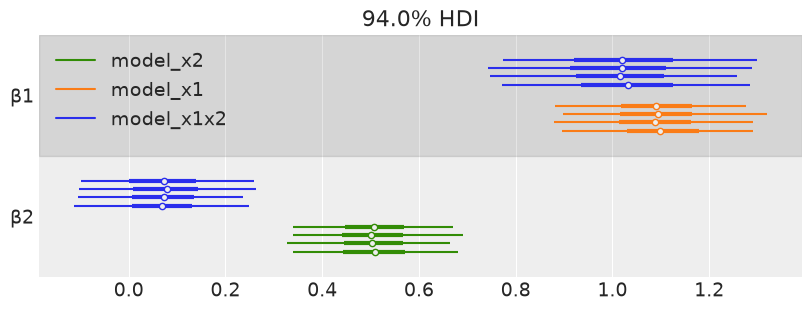
# just repeating the code from a couple of cells before, but with a lower value of `scale`.
N = 100
x_1 = dist.Normal().sample(random.PRNGKey(0), (N,))
x_2 = x_1 + numpyro.sample("x_2", dist.Normal(scale=0.01), rng_key=random.PRNGKey(1), sample_shape=(N,))
y = x_1 + dist.Normal().sample(random.PRNGKey(2), (N,))
X = jnp.vstack((x_1, x_2)).T
scatter_plot(X, y)
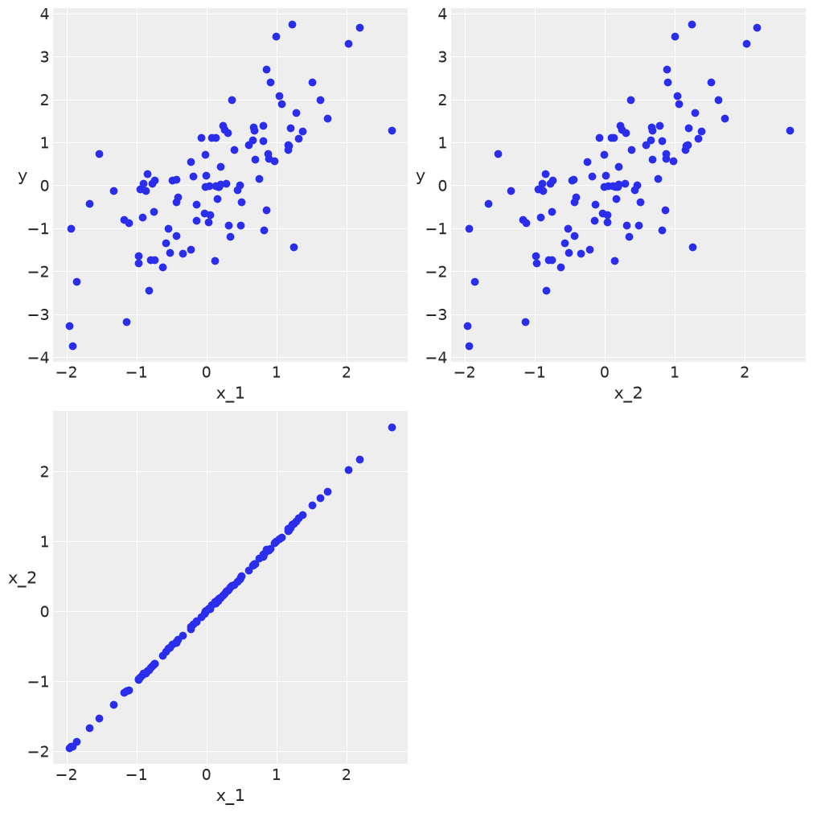
def model_red(obs=None):
α = numpyro.sample("α", dist.Normal(loc=0, scale=10))
β = numpyro.sample("β", dist.Normal(loc=0, scale=10), sample_shape=(2,))
ϵ = numpyro.sample('ϵ', dist.HalfCauchy(scale=5))
μ = α + jnp.dot(X, β)
y_pred = numpyro.sample('y_pred', dist.Normal(loc=μ, scale=ϵ), obs=obs)
kernel = NUTS(model_red)
mcmc_red = MCMC(kernel, num_warmup=1000, num_samples=1000, num_chains=4, chain_method='sequential')
mcmc_red.run(random.PRNGKey(seed), obs=y)
az.plot_forest(mcmc_red, var_names=['β'], combined=True, figsize=(8, 2))
array([<Axes: title={'center': '94.0% HDI'}>], dtype=object)
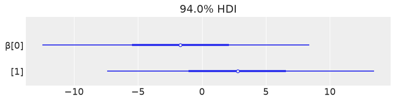
az.plot_pair(mcmc_red, var_names=['β'], scatter_kwargs={'alpha': 0.1})
<Axes: xlabel='β\n0', ylabel='β\n1'>
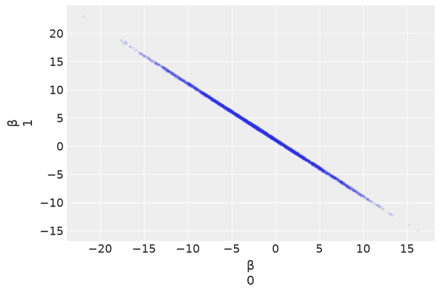
Masking effect variables#
import numpy as np
np.random.seed(42)
N = 126
r = 0.8
x_1 = np.random.normal(size=N)
x_2 = np.random.normal(x_1, scale=(1 - r ** 2) ** 0.5)
y = np.random.normal(x_1 - x_2)
X = np.vstack((x_1, x_2)).T
x_1.shape, x_2.shape, y.shape, X.shape
((126,), (126,), (126,), (126, 2))
N = 126
r = 0.8
key = random.PRNGKey(0)
k1, k2, k3 = random.split(key, 3)
x_1 = dist.Normal(0., 1.).sample(k1, (N,))
x_2 = dist.Normal(loc=x_1, scale=(1 - r ** 2) ** 0.5).sample(k2)
y = dist.Normal(loc=(x_1 - x_2), scale=1.).sample(k3)
X = jnp.stack((x_1, x_2), axis=1)
x_1.shape, x_2.shape, y.shape, X.shape
((126,), (126,), (126,), (126, 2))
scatter_plot(X, y)
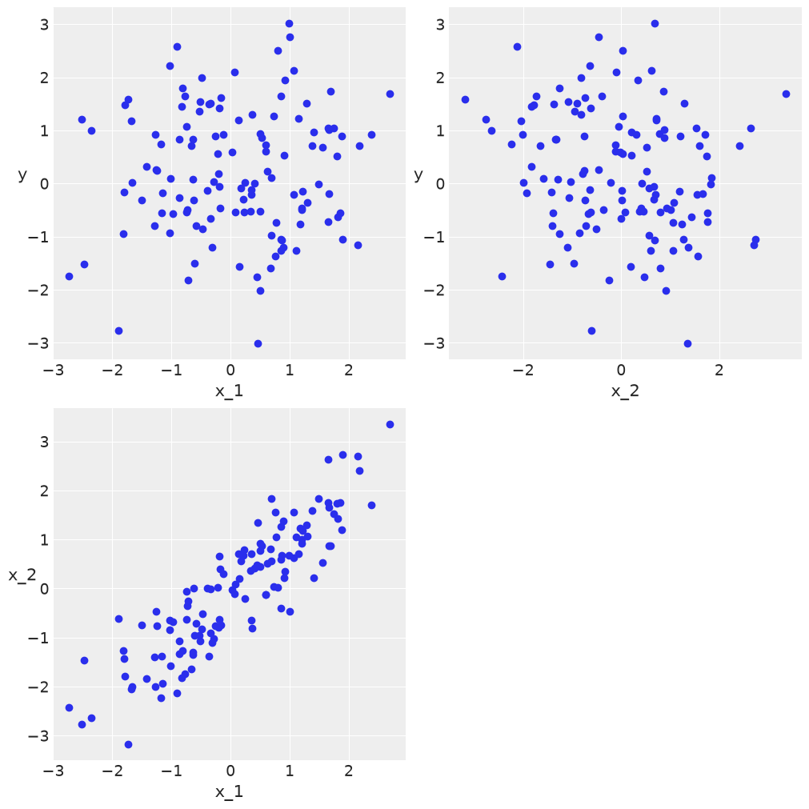
def model_x1x2(obs=None):
α = numpyro.sample("α", dist.Normal(loc=0, scale=10))
β1 = numpyro.sample("β1", dist.Normal(loc=0, scale=10))
β2 = numpyro.sample("β2", dist.Normal(loc=0, scale=10))
ϵ = numpyro.sample('ϵ', dist.HalfCauchy(scale=5))
μ = α + β1 * X[:, 0] + β2 * X[:, 1]
y_pred = numpyro.sample('y_pred', dist.Normal(loc=μ, scale=ϵ), obs=obs)
kernel = NUTS(model_x1x2)
mcmc_x1x2 = MCMC(kernel, num_warmup=1000, num_samples=1000, num_chains=4, chain_method='sequential')
mcmc_x1x2.run(random.PRNGKey(seed), obs=y)
def model_x1(obs=None):
α = numpyro.sample("α", dist.Normal(loc=0, scale=10))
β1 = numpyro.sample("β1", dist.Normal(loc=0, scale=10))
ϵ = numpyro.sample('ϵ', dist.HalfCauchy(scale=5))
μ = α + β1 * X[:, 0]
y_pred = numpyro.sample('y_pred', dist.Normal(loc=μ, scale=ϵ), obs=obs)
kernel = NUTS(model_x1)
mcmc_x1 = MCMC(kernel, num_warmup=1000, num_samples=1000, num_chains=4, chain_method='sequential')
mcmc_x1.run(random.PRNGKey(seed), obs=y)
def model_x2(obs=None):
α = numpyro.sample("α", dist.Normal(loc=0, scale=10))
β2 = numpyro.sample("β2", dist.Normal(loc=0, scale=10))
ϵ = numpyro.sample('ϵ', dist.HalfCauchy(scale=5))
μ = α + β2 * X[:, 1]
y_pred = numpyro.sample('y_pred', dist.Normal(loc=μ, scale=ϵ), obs=obs)
kernel = NUTS(model_x2)
mcmc_x2 = MCMC(kernel, num_warmup=1000, num_samples=1000, num_chains=4, chain_method='sequential')
mcmc_x2.run(random.PRNGKey(seed), obs=y)
az.plot_forest([mcmc_x1x2, mcmc_x1, mcmc_x2],
model_names=['m_x1x2', 'm_x1', 'm_x2'],
var_names=['β1', 'β2'],
combined=True, colors='cycle', figsize=(8, 3))
array([<Axes: title={'center': '94.0% HDI'}>], dtype=object)
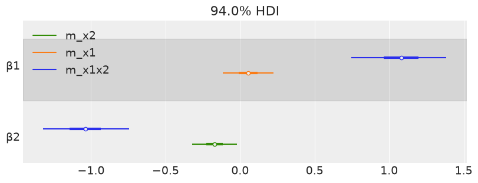
Variable variance#
data = pd.read_csv('../data/babies.csv')
data.plot.scatter('Month', 'Lenght')
<Axes: xlabel='Month', ylabel='Lenght'>
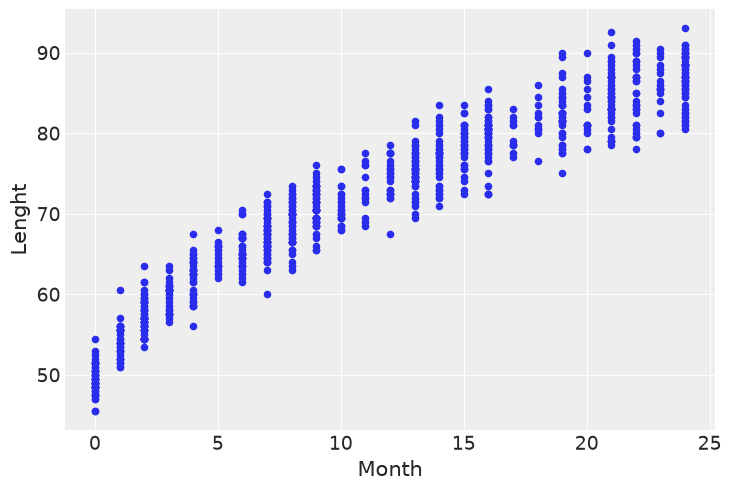
def model_vv(obs=None):
α = numpyro.sample("α", dist.Normal(scale=10))
β = numpyro.sample("β", dist.Normal(scale=10))
γ = numpyro.sample('γ', dist.HalfNormal(scale=10))
δ = numpyro.sample('δ', dist.HalfNormal(scale=10))
x_shared = data.Month.values * 1.0 # design input used directly; NumPyro re-traces per run
μ = numpyro.deterministic('μ', α + β * x_shared**0.5)
ϵ = numpyro.deterministic('ϵ', γ + δ * x_shared)
y_pred = numpyro.sample('y_pred', dist.Normal(loc=μ, scale=ϵ), obs=obs)
kernel = NUTS(model_vv)
mcmc_vv = MCMC(kernel, num_warmup=1000, num_samples=1000, num_chains=4, chain_method='sequential')
mcmc_vv.run(random.PRNGKey(seed), obs=jnp.asarray(data.Lenght))
plt.plot(data.Month, data.Lenght, 'C0.', alpha=0.1)
μ_m = mcmc_vv.get_samples()['μ'].mean(0)
ϵ_m = mcmc_vv.get_samples()['ϵ'].mean(0)
plt.plot(data.Month, μ_m, c='k')
plt.fill_between(data.Month, μ_m + 1 * ϵ_m, μ_m -
1 * ϵ_m, alpha=0.6, color='C1')
plt.fill_between(data.Month, μ_m + 2 * ϵ_m, μ_m -
2 * ϵ_m, alpha=0.4, color='C1')
plt.xlabel('x')
plt.ylabel('y', rotation=0)
Text(0, 0.5, 'y')
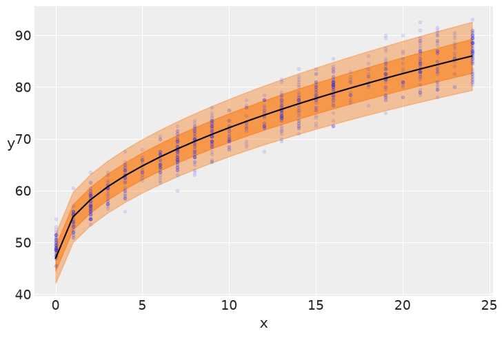
# x_shared.set_value([0.5]) -- Does not seem to be required
pred = Predictive(model=mcmc_vv.sampler.model, posterior_samples=mcmc_vv.get_samples(), return_sites=['y_pred'])
ppc = pred(random.PRNGKey(seed))
y_ppc = ppc['y_pred'][:, 0]
# https://github.com/aloctavodia/BAP/issues/69
ref = 53
grid, density = az.kde(y_ppc)
l, u = min(grid), max(grid)
print(l, u)
x_ = jnp.linspace(30, 60, density.shape[0])
print(density.shape)
35.938896 56.272194
(512,)
plt.plot(x_, density)
percentile = int(sum(y_ppc <= ref) / len(y_ppc) * 100)
plt.fill_between(x_[x_ < ref], density[x_ < ref],
label='percentile = {:2d}'.format(percentile))
plt.xlabel('length')
plt.yticks([])
plt.legend()
<matplotlib.legend.Legend at 0x7f8d8e14a0d0>
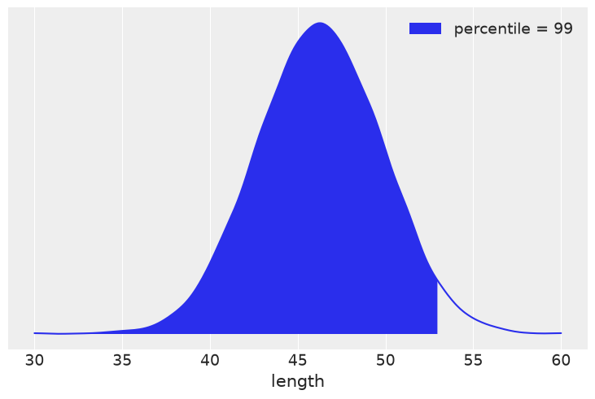
x_4 = ans[ans.group == 'IV']['x'].values
y_4 = ans[ans.group == 'IV']['y'].values
def model_t2(obs=None):
α = numpyro.sample("α", dist.Normal(loc=0, scale=100))
β = numpyro.sample("β", dist.Normal(loc=0, scale=1))
ϵ = numpyro.sample('ϵ', dist.HalfCauchy(scale=5))
ν = numpyro.sample('ν', dist.Exponential(rate=1/30))
# ν = numpyro.sample('ν', dist.Gamma(concentration=20, rate=15))
# ν = numpyro.sample('ν', dist.Gamma(concentration=2, rate=0.1))
y_pred = numpyro.sample('y_pred', dist.StudentT(df=ν, loc=α + β * x_4, scale=ϵ), obs=obs)
kernel = NUTS(model_t2)
mcmc_t2 = MCMC(kernel, num_warmup=1000, num_samples=1000, num_chains=4, chain_method='sequential')
mcmc_t2.run(random.PRNGKey(seed), obs=y_4)
az.plot_trace(mcmc_t2, compact=False)
array([[<Axes: title={'center': 'α'}>, <Axes: title={'center': 'α'}>],
[<Axes: title={'center': 'β'}>, <Axes: title={'center': 'β'}>],
[<Axes: title={'center': 'ν'}>, <Axes: title={'center': 'ν'}>],
[<Axes: title={'center': 'ϵ'}>, <Axes: title={'center': 'ϵ'}>]],
dtype=object)
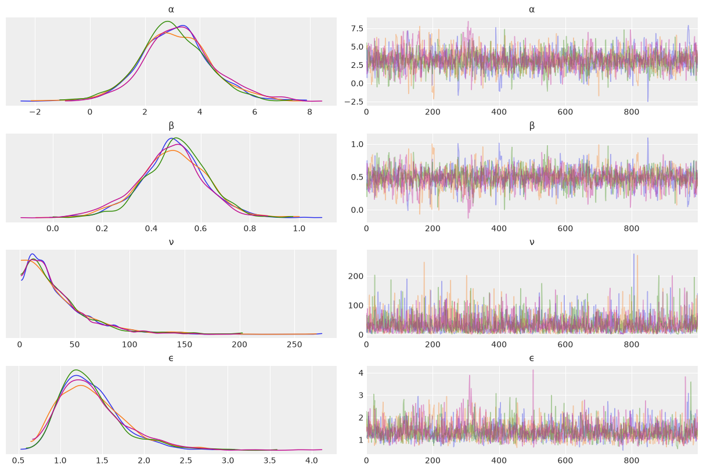
az.summary(mcmc_t2)
| mean | sd | hdi_3% | hdi_97% | mcse_mean | mcse_sd | ess_bulk | ess_tail | r_hat | |
|---|---|---|---|---|---|---|---|---|---|
| α | 3.122 | 1.324 | 0.804 | 5.897 | 0.034 | 0.036 | 1604.0 | 1567.0 | 1.0 |
| β | 0.487 | 0.139 | 0.209 | 0.745 | 0.004 | 0.004 | 1559.0 | 1310.0 | 1.0 |
| ν | 33.994 | 29.823 | 1.122 | 86.537 | 0.550 | 0.754 | 2242.0 | 1955.0 | 1.0 |
| ϵ | 1.376 | 0.391 | 0.724 | 2.094 | 0.011 | 0.012 | 1508.0 | 1889.0 | 1.0 |